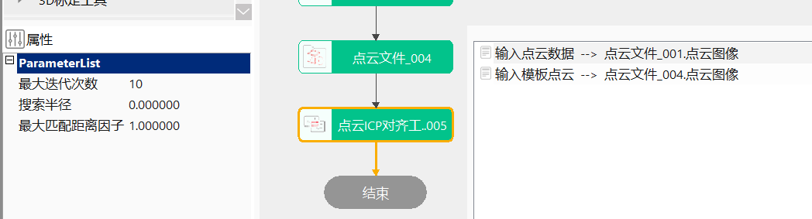

点云ICP对齐工具计算源点云数据和模板点云数据之间的变换关系的工具。
在3D测量中，经常遇到对两个点云位置关系的变换，即将输入点云变换到模板点云的位置。点云ICP对齐工具计算两点云直接的距离，迭代至点集间距离最小，即认为点云对齐计算成功，并输出变换矩阵。
step1：添加点云文件、点云ICP对齐工具，并双击打开工具参数链，链接点云文件，如图3-1所示；
step2：点击工具属性参数，然后点击运行该工具；

无
| 参数名称 | 参数说明 |
|---|---|
| 输入点云数据 | 输入源点云图像 |
| 输入模板点云 | 输入模板点云图像 |
| 参数名称 | 参数说明 |
|---|---|
| 最大迭代次数 | 取值范围：(0,10000] |
| 搜索半径 | 搜索半径，取值 <= 0时表示无限制，取值范围：[-1000000,1000000] |
| 最大匹配距离因子 | 取值范围：[0.0,1.0] |
| 开启并行运算 | 是否开启并行运算，选择是时，算法将开启OpenMp并行计算方式，可以提升计算速度，但可能出现耗时不稳定的情况，选择否时，算法将关闭OpenMp并行计算。 |
| 线程数百分比 | 设置并行运算的线程数百分比，有效范围为 (0, 0.75]，对应表示(0%, 75%]百分比范围。 |
| 参数名称 | 参数说明 |
|---|---|
| 源点云数据到模板点云数据刚性变换矩阵 | 输出变换矩阵 |
| 模板点云数据到源点云数据刚性变换矩阵 | 输出变换矩阵 |
| 参数名称 | 参数说明 |
|---|---|
| 源点云数据到模板点云数据刚性变换矩阵 | 输出变换矩阵 |
| 模板点云数据到源点云数据刚性变换矩阵 | 输出变换矩阵 |
| 执行时间 | 工具执行时间 |
| 执行结果 | 工具执行结果 |
参见“\Samples\3D\点云\点云模型对齐工具.gvp”。
无